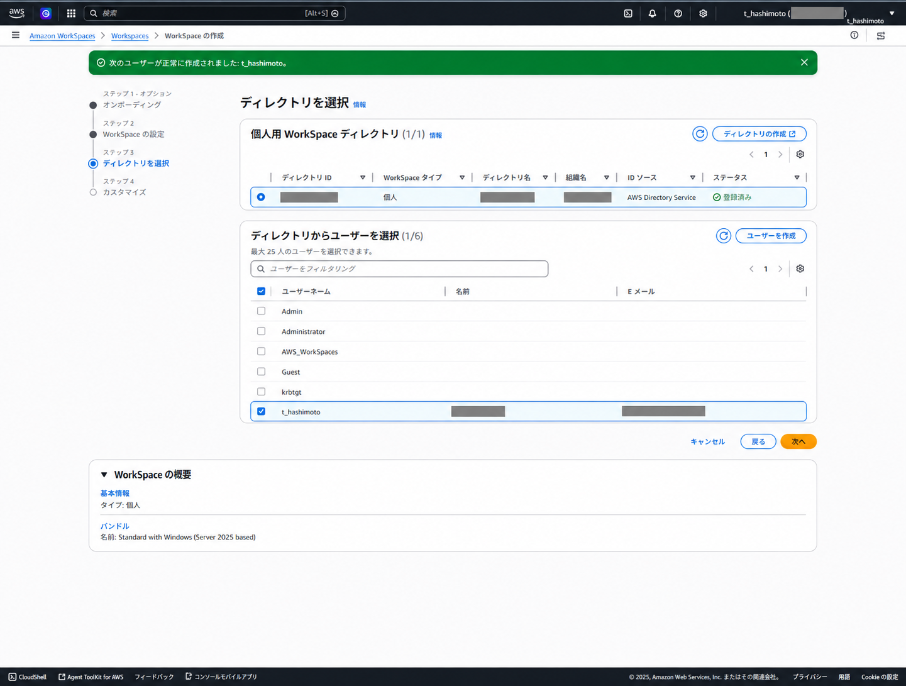

Amazon WorkSpaces
Amazon WorkSpaces Personal のディレクトリ設定、ユーザー管理、作成、接続、PCoIPからWSPへの変更手順を整理します。
2026 年 7 月 31 日以降、PCoIP ベースの WorkSpaces Personal は新規顧客へ提供されません。2027 年 10 月 31 日以降は作成・接続できません。新規構築は DCV (WorkSpaces Streaming Protocol: WSP) を標準とし、既存環境は移行を計画します。
関連リポジトリ: workspaces-ad-foundation-poc
情報
| 区分 | 内容 |
|---|---|
| 基盤 | VPC、Public / Private Subnet、NAT Gateway、VPC Peering、Route Table、Security Group |
| ディレクトリ | AWS Managed Microsoft AD、AD Connector、WorkSpacesディレクトリ登録 |
| WorkSpaces | WorkSpaces Personal、ユーザー選択、バンドル選択、実行モード、WorkSpace起動、クライアント接続、Web Access |
| 運用 | カスタムイメージ、カスタムバンドル、ユーザー管理、エラー時の切り分け |
本ページは、AWS Managed Microsoft ADでユーザーを管理するAmazon WorkSpaces Workshopの実施内容を基にしています。
ストリーミングプロトコルの選定
WorkSpaces Personal は DCV (WSP) と PCoIP をサポートします。PCoIPは終了予定のため、新規構築はDCVを標準とします。既存環境は、端末、ネットワーク、周辺機器を検証して移行します。
| 観点 | DCV (WSP) | PCoIP |
|---|---|---|
| 設計方針 | 新規構築の標準です。AWS の新機能開発は DCV に集中しており、既存 PCoIP 環境の移行先になります | 既存環境の移行計画が必要です。新規設計の選択肢にはしません |
| ネットワークと認証 | 高い遅延・パケット損失への耐性が必要な利用者、スマートカード、Web カメラ、WebAuthn 認証器の利用要件に適します | 既存の PCoIP クライアントや端末との互換性を優先する場合に確認します |
| OS・アクセス方式 | Windows Server 2022 の Web Access、Ubuntu、Windows 11 BYOL、Graphics.g4dn / GraphicsPro.g4dn の利用要件を満たします | iPad、Android、Linux クライアント、Teradici PCoIP Zero Client、既存の Graphics / GraphicsPro バンドルなどの要件を個別に確認します |
DCV と PCoIP では、対応クライアント、OS、GPU バンドル、周辺機器のサポート範囲が異なります。既存 PCoIP を移行する場合は、利用者の端末、ネットワーク経路、印刷、周辺機器、アプリケーションを代表ユーザーで事前検証します。
公式情報: Supported features by protocol type for WorkSpaces
PCoIPからDCV (WSP) へのプロトコル変更
PCoIPバンドルから作成したWindows WorkSpaceは、既存のWorkSpaceを保持したままストリーミングプロトコルを変更できます。PCoIPのサポート終了に備え、PCoIP WorkSpaceを検証用に作成し、DCV (WSP) へ変更する手順を確認します。
プロトコル変更前に、非本番WorkSpaceでクライアント、ネットワーク経路、印刷、周辺機器、アプリケーションを検証します。変更中はセッションのプロビジョニングがブロックされるため、利用者が接続できない時間帯を設けます。
対象と事前確認: 直接変更できるのはPCoIPバンドルから作成したWindows WorkSpaceです。
| 項目 | 確認内容 |
|---|---|
| 作成元バンドル | 直接変更できるのはPCoIPバンドルから作成したWindows WorkSpaceです。現在の表示プロトコルだけでなく、作成元バンドルを確認します |
| 状態 | 対象WorkSpaceをAVAILABLEにします。保留中の変更、再起動、イメージ作成などの作業は完了させます |
| DCVの前提 | 利用者のWorkSpacesクライアント、リージョン、バンドル、DCVに必要なIPアドレスとポートの要件を確認します |
| Web Access | PCoIPからDCVへ変更した後、再びPCoIPへ戻すとWeb Accessでは接続できなくなります |
AWS CLIで変更:
- 対象WorkSpaceのID、状態、現在のプロトコルを確認します
- プロトコルを
WSPへ変更します。Protocolsの値は大文字・小文字を区別するため、WSPまたはPCOIPを使用します - 最大40分程度待機し、再度状態とプロトコルを確認します
aws workspaces describe-workspaces \
--workspace-id ws-xxxxxxxx \
--query 'Workspaces[0].{WorkspaceId:WorkspaceId,State:State,BundleId:BundleId,Protocols:WorkspaceProperties.Protocols}' \
--output table
aws workspaces modify-workspace-properties \
--workspace-id ws-xxxxxxxx \
--workspace-properties "Protocols=[WSP]"
aws workspaces describe-workspaces \
--workspace-id ws-xxxxxxxx \
--query 'Workspaces[0].{WorkspaceId:WorkspaceId,State:State,Protocols:WorkspaceProperties.Protocols}' \
--output tableコンソールから実施する場合は、対象WorkSpaceを選択して「アクション」から「プロトコルの変更」を選びます。完了後は、ステータスがAVAILABLEであり、プロトコルがDCV (WSP)になったことを確認します。
変更失敗時: 変更開始前にチェックポイントスナップショットが作成されます。失敗時はRESOURCE: PROTOCOLとSTATE: UPDATE_FAILEDを確認し、変更前のチェックポイントへ復元してから再試行します。
WSPバンドルから作成したWorkSpace: 直接変更の対象外です。バンドルまたはOSを変更する場合は、対応バンドルへの移行を検討します。Cドライブのデータ、アプリケーション、設定、レジストリ変更は保持されません。Dドライブも最後のスナップショット以降の変更が失われます。
移行前にCドライブのデータを退避し、最後のユーザーボリュームスナップショットの時刻を確認します。移行後は新しいWorkSpace ID、コンピューター名、IPアドレスが割り当てられ、旧プロファイルは.NotMigratedサフィックス付きで残ります。移行先はDCV (WSP) を前提に選定します。
公式情報: Modify protocols、IP address and port requirements for WorkSpaces、WorkSpace の移行
構築フロー
- WorkSpaces Personalで使用するVPC、2つの異なるAZのサブネット、AWS Managed Microsoft ADを準備します
- WorkSpacesディレクトリを作成・登録し、アクセス制御とセルフサービス権限を確認します
- WorkSpaces Personalを作成し、バンドル、実行モード、タグを設定します
- 登録済みディレクトリから利用者を選択するか、利用者アカウントを作成します
- 必要に応じて、暗号化、ルートボリューム、ユーザーボリュームをカスタマイズします
- WorkSpaceが
AVAILABLEになったことを確認し、クライアントアプリまたはWeb Accessで接続します
WorkSpacesはディレクトリ、DNS、サブネット、セキュリティグループ、ルートテーブルの影響を強く受けます。WorkSpace単体のステータスだけでなく、Directory Service側のセキュリティグループやVPC DNS設定も合わせて確認します
Directory Service連携
WorkSpacesでは、AWS Managed Microsoft AD、Simple AD、AD Connectorなどのディレクトリを利用します。AD Connectorを使う場合は、ディレクトリに接続するためのサービスアカウントを用意し、必要最小限の権限を委任します
| 確認項目 | 確認内容 |
|---|---|
| DNS | WorkSpaces用VPCからディレクトリのDNS名を解決できること |
| ルーティング | VPC PeeringやClient VPN経由でAD Connector、Domain Controllerへ到達できること |
| セキュリティグループ | DNS、Kerberos、LDAPなど、AD ConnectorとDomain Controller間に必要な通信が許可されていること |
| サービスアカウント | Domain Adminsではなく、AD Connector用の最小権限アカウントを作成して利用すること |
AWS Managed Microsoft ADのアカウントの役割
WorkSpacesのユーザー選択画面には、利用者アカウントだけでなく、ディレクトリの組み込みアカウントやAWSサービスアカウントも表示されます。WorkSpaceを割り当てる対象は、業務利用者用に作成した通常アカウントに限定します。
| アカウント | 役割 | WorkSpaceの割り当て |
|---|---|---|
Admin |
AWS Managed Microsoft ADの作成時に生成されるディレクトリ管理アカウントです | 割り当てません。管理操作だけに使用します |
Administrator |
ADの組み込み特権アカウントです。AWSが運用管理のために制御します | 割り当てません。名前変更や削除も行いません |
AWS_WorkSpaces |
Amazon WorkSpaces連携用のアプリケーション固有サービスアカウントです | 割り当てません。削除や無効化を行いません |
Guest |
ADの組み込みゲストアカウントです | 割り当てません。無効状態を維持します |
krbtgt |
Kerberos Key Distribution Centerが使用する組み込みサービスアカウントです | 割り当てません。削除や通常の運用変更を行いません |
公式情報: AWS Managed Microsoft AD Administrator account and group permissions、AWS application-specific service accounts
AD Connectorのサービスアカウントには、ユーザーとグループの読み取り権限が必要です。Seamless Domain JoinやWorkSpacesを使う場合は、ドメイン参加やコンピューターオブジェクト作成に関する権限も確認します
公式情報: Getting started with AD Connector
WorkSpacesディレクトリ登録
Directory Serviceで作成または接続したディレクトリを、Amazon WorkSpaces側で登録します。登録後に、利用サブネット、アクセス制御、セルフサービス権限、Web Accessを設定します
WorkSpacesディレクトリを作成・登録する
- Amazon WorkSpaces コンソールの「ディレクトリ」から「ディレクトリの作成」を選択します
- WorkSpace タイプは「個人」、WorkSpace デバイス管理は「AWS Directory Service」を選択します
- AWS Managed Microsoft AD など、登録する未登録ディレクトリを選択します
- 登録用サブネットを2つ選択します。この2つは必ず異なる Availability Zone に配置します
- 必要なセルフサービス権限を確認して登録し、ディレクトリの登録状態が有効になることを確認します
2つのサブネットが同じ Availability Zone にあると、ディレクトリを作成・登録できません。コンソールには「You tried to choose two subnets that are in the same Availability Zone」というエラーが表示されます。
サブネットIDではなく、各サブネットが属する Availability Zone を確認します。異なるAZのサブネットへ選び直してから再試行します。

WorkSpaces Personalの作成
- Amazon WorkSpacesのナビゲーションから、WorkSpacesのプロビジョニングを開始します
- WorkSpaceタイプで「個人」を選択し、バンドル、実行モード、タグを設定します
- 登録済みディレクトリを選択し、対象ユーザーを選択または作成します
- 必要に応じて、暗号化、ルートボリューム、ユーザーボリュームをカスタマイズします
- 作成後、ステータスが
AVAILABLEになることを確認します - WorkSpacesクライアントまたはWeb Accessでサインインします
オプションと実行モード
個人向けの永続デスクトップとして作成し、利用者に合うバンドルを選択します。実行モードは、常時利用する端末ではAlwaysOn、利用時間に応じて課金を抑える場合はAutoStopを選択します。

ディレクトリと利用者の選択
登録済みディレクトリから、WorkSpaceを割り当てる利用者を選択します。AWS Managed Microsoft ADを利用する場合、WorkSpacesコンソールの作成フローから利用者を追加できます。通常アカウントだけを選択し、組み込みアカウントやサービスアカウントを選択しないことを確認します。

t_hashimotoを選択した例です。ディレクトリ情報、氏名、メールアドレスはマスクしています。カスタマイズ
要件に応じて、ルートボリュームとユーザーボリュームの暗号化、容量、カスタムバンドルを設定します。後からカスタムイメージを作成する場合は、暗号化とイメージ運用の制約を事前に確認します。
カスタムイメージを作成する予定があるWorkSpaceでは、ボリューム暗号化の扱いに注意します。AWS公式ドキュメントでは、暗号化されたWorkSpaceからのイメージ作成はサポートされません
接続
WorkSpaceの作成完了後、利用者には初回接続用メールが届きます。メールの個別リンクと登録コードは接続情報にあたるため、ドキュメントやチケットへ転載しません。利用者自身がメールからプロフィールと初期パスワードを設定します。
- WorkSpaceのステータスが
AVAILABLEであることを確認します - 利用者が初回接続用メールからプロフィールと初期パスワードを設定します
- Amazon WorkSpaces クライアントのダウンロードページから、利用端末に合うクライアントを導入します
- クライアントへメール記載の登録コードを入力し、ディレクトリのユーザー名と設定済みパスワードでサインインします
DCV (WSP) ベースの Windows または Linux WorkSpace で、管理者がWeb Accessを有効化している場合は、クライアントを導入せずにWeb Accessを選択して対応ブラウザから接続できます。
公式情報: WorkSpaces clients、WorkSpaces Web Access
AD管理ツールとGPMC
WorkSpacesのコンピューターオブジェクト用とユーザーオブジェクト用に、別々のOUを作成する方法は推奨構成です。OUやGPOを管理するには、AD管理ツールとGroup Policy Management Console (GPMC) を導入した、ディレクトリ参加済みの管理端末を用意します。
Install-WindowsFeature は Windows Server の ServerManager モジュールに含まれるコマンドです。Windows 10/11 ベースの WorkSpace で実行すると、コマンドが見つからず失敗します。その場合は、RSATをWindowsの機能として追加します。
Windows 10/11ベース: 管理者としてWindows PowerShellを起動し、利用可能なRSAT機能を確認してから、AD DS/LDSツールとGPMCを追加します。
Get-WindowsCapability -Online |
Where-Object Name -match 'Rsat\.(ActiveDirectory|GroupPolicy)' |
Format-Table Name, State
Add-WindowsCapability -Online -Name Rsat.ActiveDirectory.DS-LDS.Tools~~~~0.0.1.0
Add-WindowsCapability -Online -Name Rsat.GroupPolicy.Management.Tools~~~~0.0.1.0
Get-WindowsCapability -Online |
Where-Object Name -match 'Rsat\.(ActiveDirectory|GroupPolicy)' |
Format-Table Name, StateWindows Serverベース: 管理者としてWindows PowerShellを起動し、ServerManagerの機能として導入します。
Install-WindowsFeature -Name RSAT-ADDS,GPMC導入後はdsa.mscでActive Directory Users and Computers、gpmc.mscでGPMCを開きます。AWS Managed Microsoft ADでは、ディレクトリ管理者のAdminで「別のユーザーとして実行」し、必要な権限で管理します。AWSは、5台以上のWorkSpacesを運用する場合、管理ツールをWorkSpaceへ導入するよりも、ディレクトリへ参加させたAmazon EC2 Windowsインスタンスへ管理を集約する方法を推奨します。
OU・ADユーザー管理
AdminでAD管理ツールを起動:
- スタートメニューから「Active Directory ユーザーとコンピューター」を検索します
- 検索結果を右クリックし、「別のユーザーとして実行」を選択します
- AWS Managed Microsoft ADのディレクトリ管理者
Adminの資格情報を入力します - Active Directory ユーザーとコンピューターを開き、管理対象のOUを確認します

WorkSpaces用OUを作成:
WorkSpacesのコンピューターオブジェクトと利用者を分離して管理するため、専用の親OU配下にComputersとUsersを作成します。AWSが作成したAWS Reservedなどの定義済みOU、グループ、ユーザーは変更・削除しません。
- Active Directory ユーザーとコンピューターで、AWS Managed Microsoft ADのドメインを展開します
- 管理用の親OUを作成します
- 親OUの配下に
ComputersとUsersを作成します - GPOは対象となるコンピューターOUまたはユーザーOUへリンクし、適用対象を分離します

ADユーザーを作成:
利用者をAD側で管理する場合は、Users OUを選択して「新規作成」から「ユーザー」を選びます。姓名、表示名、ユーザーログオン名を入力し、作成後にWorkSpacesコンソールで対象ユーザーへWorkSpaceを割り当てます。

初回パスワードには一時パスワードを設定し、「ユーザーは次回ログオン時にパスワード変更が必要」を選択します。「パスワードを無期限にする」と「アカウントは無効」は通常の利用者アカウントでは選択しません。後者を選択した場合は、WorkSpaceを割り当てる前に必ず有効化します。
公式情報: Manage your Windows WorkSpaces in WorkSpaces Personal、Set up Active Directory Administration Tools for WorkSpaces Personal、Install and Manage Remote Server Administration Tools in Windows
ユーザーとOUの公式情報: Creating an AWS Managed Microsoft AD user、AWS Managed Microsoft AD Administrator account and group permissions、AWS Managed Microsoft AD best practices